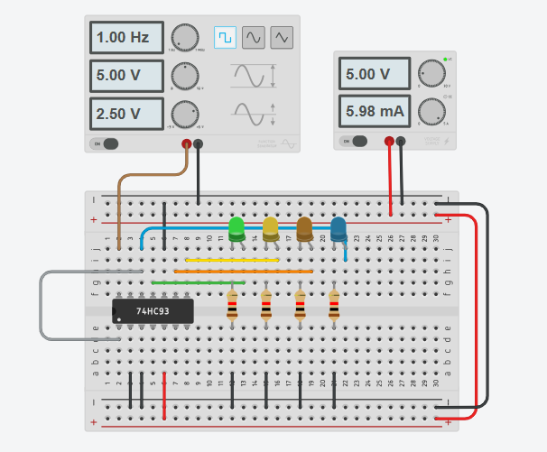
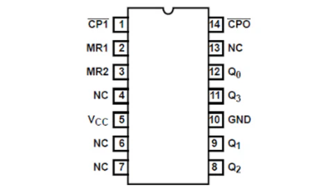
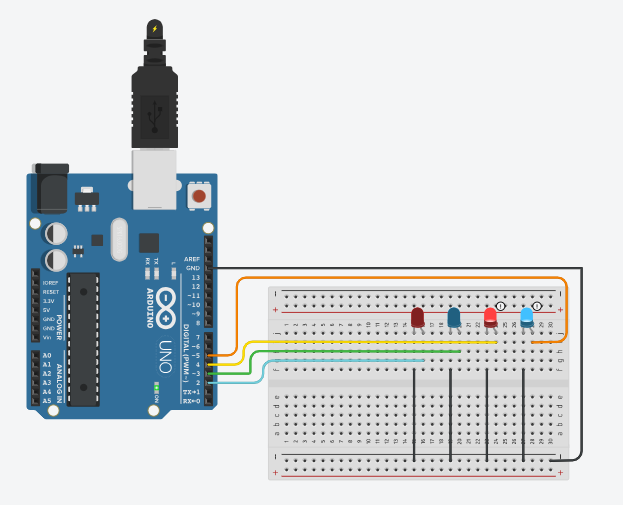

Componentes do Projeto
- Gerador de clock (1 Hz, onda quadrada)
- CI 74HC93 (Contador binário de 4 bits)
- 4 LEDs
- 4 Resistores
- Fonte de alimentação (5V)
Funcionamento do Projeto
- Gerador de clock: Controla o CI 74HC93 com um sinal de 1 Hz.
- CI 74HC93: Incrementa a contagem de 0 a 15 em binário a cada pulso de clock.
- Flip-flop JK: Altera o estado binário conforme o clock, permitindo a contagem de bits.
- LEDs: Mostram o valor binário da contagem.
- Resistores: Protegem os LEDs, limitando a corrente.
- Fonte de alimentação: Fornece 5V para o circuito.
Circuito Integrado 74HC93
Contador Binário com Arduino
Este projeto implementa um contador binário de 4 bits usando um Arduino e 4 LEDs.